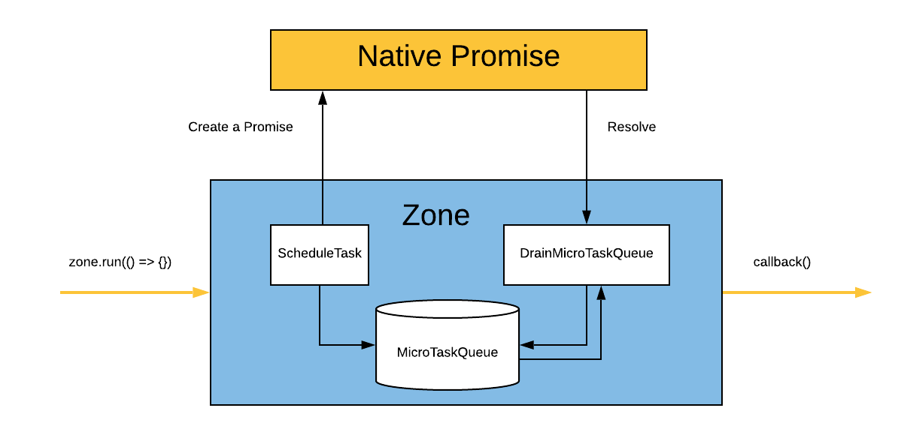
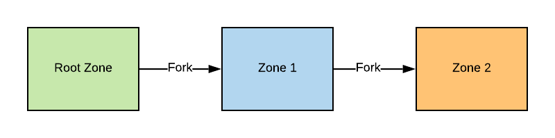
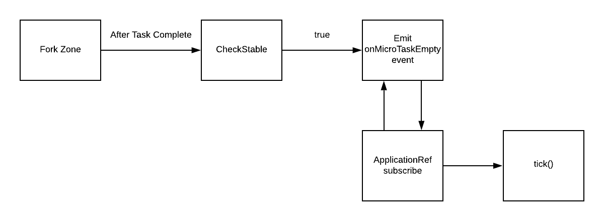

Zone.js and
Change detection in Angular
Eric Chen
A short description of Zone
A Zone is an execution context that persists across async tasks. You can think of it as thread-local storage for JavaScript VMs.
Asynchronise APIs
MicroTask
Promise, MutationObserver
MacroTask
setTimeout, setImmediate, setInterval, requestAnimationFrame
EventTask
Monkey-patch Promise in Zone.js

Current Zone

// In Zone 1 setTimeout(callback, 1000);
Event Loop Recap
Auto change detection in Angular
